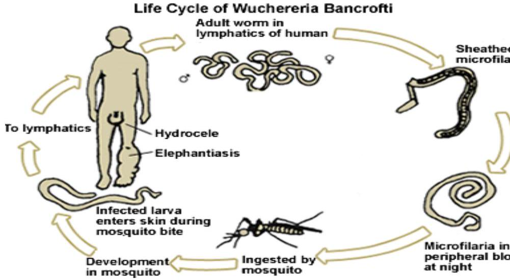
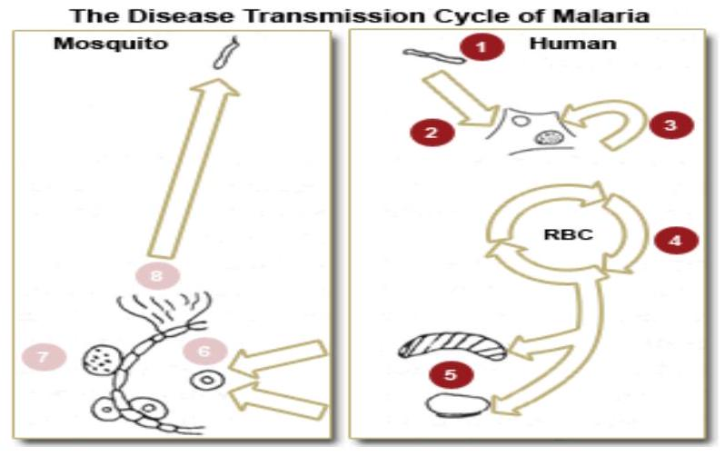
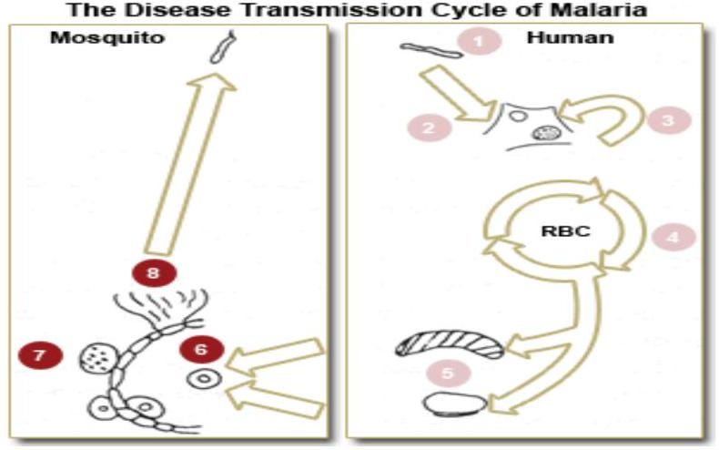

SECTION 4: VECTOR-BORNE DISEASES
Introduction
In this section you will examine communicable diseases which are transmitted by invertebrate hosts, that is organisms without a backbone. This section is longer than the previous one due to the large number of important diseases which fall under this group. As usual you will look at each type of disease, its causative organisms, clinical features, management and prevention.
Objectives
By the end of this section you will be able to:
- List at least nine common vector-borne diseases
- Describe the clinical features of vectorborne diseases
- Describe the transmission cycle of vector-borne diseases
- Explain the management of vectorborne diseases
-
Discuss the preventive measures of vector-borne diseases namely:
- Malaria
- Filariasis
- Yellowfever
- Trypanosomiasis
- Schistosomiasis
- Leishmaniasis
- Plague
- Relapsingfever
- Onchocerciasis
Vector-borne Diseases
The organisms which cause vector-borne diseases usually undergo part of their development inside the vectors themselves. The time taken by the disease-causing organism to develop inside the vector is called the extrinsic incubation period. Although the housefly is an insect that is known to carry bacteria and chlamydia, it is not considered a vector. This is because it is merely a mechanical transmitter of disease; the organisms do not develop inside its body.
The majority of vectors are insects with the mosquito being the most common. This is because the mosquito is responsible for transmitting more diseases than any other vector. Insect vectors usually acquire disease organisms by sucking blood from infected persons. They then transmit the infection by depositing infected faeces or body fluids in skin cracks or abrasions. Most vectors have quite specific breeding, feeding and attacking behaviour. They therefore only thrive in areas where suitable conditions exist for their survival. As a result, vector-borne diseases tend to be present all the time (endemic) in a given geographical area or population.
Many of the diseases transmitted by vectors can also become epidemic, especially when there are environmental or other changes leading to increased transmission. Some serious epidemics which have occurred in Africa have been as follows:
- Yellow fever: Ethiopia, Sudan, Nigeria, Ghana
| Disease | Causative Organism | Vector |
|---|---|---|
| Malaria | Plasmodium falciparum |
Anopheles funestus (female mosquito) |
| Filariasis (elephantiasis) | Wuchereria bancrofti | Culex pipiens |
| Yellow fever | Flavivirus | Aedes aegypti (mosquito) |
| Visceral Leishmaniasis (Kala Azar) | Leishmania donovani | Phlebotomus lutzomyia (Sandfly) |
| Trypanasomiasis (Sleeping sickness) | Trypanosoma gambiense |
Glossina palpalis |
| Onchocerciasis (River blindness) | Onchocerca volvulus | Simulium damnosum (black fly) |
| Plague | Yersinia pestis | Xenopsylla cheopis (Rat flea) |
Malaria
Malaria is an acute infection of the blood caused by protozoa of the genus plasmodium. For a
- Trypanosomiasis: Uganda
- Kala Azar: Kenya, Sudan
- Plague: Uganda, Kenya, Tanzania
- Typhus fever: Burundi, Rwanda, Ethiopia
When communicable diseases are present in animals all the time, such as the case of yellow fever in monkeys and plague in rats, the disease is said to be enzootic (epidemic in animals).
directly or indirectly responsible for much illhealth and death, especially of children.
The vector responsible for the transmission of malaria is the anopheline mosquito (anopheles gambiae and anopheles funestus), which thrive in humid, warm climates where water is available. The parasites develop properly in the mosquito in places where the mean temperature is $16-32^{\circ}\text{C}$. The cooler the environmental temperature the longer it takes for the parasites to develop in the mosquito. The parasite takes about 35-36 days to develop at a mean daily temperature of $16^{\circ}\text{C}$, and nine days when the mean daily temperature is $30^{\circ}\text{C}$ or above. Mosquitoes have an average life span of two to four months.
Malaria Epidemiology
Malaria is caused by the plasmodium (parasite) that is transmitted to human beings by the bite of the infected female anopheles mosquito. There are four plasmodium species and any of them can cause malaria. They are:
- Plasmodium falciparum
- Plasmodium malariae
- Plasmodium ovale
- Plasmodium vivax
In Kenya $98\%$ of malaria is caused by plasmodium falciparum. The other $2\%$ of the cases are caused by plasmodium malariae and plasmodium ovale. Malaria caused by plasmodium vivax is very rare. Malaria due to plasmodium falciparum is usually the most severe form of malaria and is called malignant malaria. The mortality rate due to malaria is highest in children under five years of age. In Kenya, malaria occurs in two patterns:
Endemic Malaria
Endemic malaria (also called 'stable malaria') is transmitted all the year round. This type of malaria is found around Lake Victoria and the coastal region of Kenya. Endemic malaria causes severe infection in children under five years of age and in pregnant mothers. The mortality rate is high among infected children. After repeated bites by infected mosquitoes older children and adults develop partial immunity to malaria.
Epidemic Malaria
Epidemic malaria (also called 'unstable malaria') occurs seasonally and affects people of all ages. Seasonal malaria occurs in Machakos, Embu, Kitui, Tharaka and Marigat in Baringo. Another form of epidemic malaria occurs in the highlands and those areas bordering endemic zones. This type of malaria is called highland malaria and is seen seasonally and affects all people severely. Highland malaria epidemics have had high mortality rates. The areas in Kenya which have been affected by highland malaria include Kisii, Nyamira, Kericho, Turkana and Narok.
Transmission and Life Cycle of Malaria
Malaria parasites develop in two cycles: The first cycle takes place in the mosquito and the other cycle in the infected human being. The first cycle which takes place in the mosquito is called the sexual cycle, while that which takes place in the human being is called the asexual cycle. You will now examine each transmission cycle starting with the asexual cycle.
Asexual Cycle
The asexual cycle of transmission takes place in the body of the infected human being and starts when the infected female anopheles mosquito bites a person.
Upon biting humans, the infected female mosquito injects sporozoites via its proboscis into the blood stream (1). The sporozoites circulate in the blood for about one hour and then they enter the liver cells (2). In 10-14 days the sporozoites develop into liver schizonts while still in the liver (3). The liver schizonts later burst releasing large numbers of merozoites. The merozoites leave the liver and enter the blood stream (4) where they penetrate the red blood cells.
Inside the red blood cells, the merozoites develop into trophozoites. The trophozoites then develop into erythrocytic schizonts. These erythrocytic schizonts burst releasing a shower of merozoites, which invade fresh erythrocytes (5). Some of the released erythrocytic merozoites form male and female gametocytes, which are sucked by the feeding mosquito.
Sexual Cycle
The sexual cycle of the malaria parasite takes place in the body of the female anopheles mosquito. This cycle begins when the feeding mosquito sucks blood containing the male and female gametocytes. In the stomach of the mosquito, the male gametocytes mate with the female gametocytes. The fertilised gametocyte is called the ookinete (6). The ookinete stays in the stomach of a mosquito for about 12-18 hours after which it penetrates the stomach wall. Upon reaching the outer surface of the stomach wall, the ookinete changes into an oocyst (7). The oocysts grow rapidly and burst releasing large numbers of sporozoites into the body cavity of the mosquito. Many of the sporozoites move to the salivary glands of the mosquito (8) from where they are injected into the body of the next human being when the mosquito feeds.
Clinical Features of Malaria
The incubation period of malaria is about 10-14 days after the infection. The symptoms appear once the invaded erythrocytes rupture to release new merozoites. This stimulates the body's immune system and the signs and symptoms of malaria then appear:
- Headache and dizziness
- Joint pains
- Backache
- Fever and chills (high body temperature, rigors)
- Nausea and vomiting
- Diarrhoea
- Excessive sweating
- Jaundice
- Enlargement of spleen
- Convulsions
- Anaemia
A typical attack of malaria progresses through the following three stages:
The Cold Stage
This stage starts suddenly and lasts for fifteen minutes to one hour. The patient's body temperature rises and they shiver. During this stage, the infected erythrocytes rupture releasing merozoites in the blood circulation.
The Hot Stage
The hot stage last for two to six hours. The body temperature is high ($40-41^{\circ}\text{C}$) with severe headache, nausea and vomiting. The skin is hot and dry.
The Sweating Stage
The fever drops rapidly and the patient sweats profusely. This stage last for two to four hours.
Complications of Malaria
Severe malaria can cause serious complications and is life threatening.
Brain
Mental disturbance appearing as acute psychosis, meningitis-like symptoms and coma.
Diagnosis of Malaria
Diagnosis is made through:
- Clinical symptoms
- Laboratory examination of thick and thin peripheral blood films/slides (smears) which demonstrate the parasites (Trophozoites)
Management of Malaria
The treatment of malaria depends on whether the disease is complicated malaria or uncomplicated malaria (severe malaria).
Uncomplicated malaria is usually treated on an outpatient basis.
Treatment of Uncomplicated Malaria
| Age Group | Weight Range |
|---|---|
| < 3months | <5 |
| 3 mo to 11 mo | 5 to 9 |
| 12 mo to 3 yr | 10 to 14 |
| 4 yr to 6 yr | 15 to 18 |
| 7 yr to 11 yr | 19 to 37 |
| 12 yr to 15 yr | 38 to 49 |
| 16 yr and above | 50 and above |
| Dose per Kg body weight | |
Patients presenting with coma, convulsions, respiratory distress, acute renal failure, jaundice, shock, hypoglycaemia, or acidosis due to
| Age Group | Expected Weight (Kg) | Number of tablets per dose given eight hourly | |
|---|---|---|---|
| Quinine Sulphate 200 mg | Quinine Bisulphate 300 mg | ||
| < 3months | <5 | 1/4 | 1/4 |
| 3 mo to 11 mo | 5 to 9 | 1/2 | 1/2 |
| 12 mo to 3 yr | 10 to 14 | 3/4 | 3/4 |
| 4 yr to 5 yr | 15 to 18 | 1 | 1 |
| 6yr to 7yr | 19 to 25 | 1 1/4 | 1 1/4 |
| 8yr to 12yr | 26 to 37 | 1 3/4 | 1 3/4 |
| 13 yr to 15 yr | 38 to 49 | 2 1/2 | 2 1/2 |
| 16 yr and above | 50 and above | 3 | 3 |
Intravenous quinine in dextrose is used in severe complicated Malaria where the patient presents with vomiting and coma.
Prevention and Control of Malaria
malaria should be admitted into the ward for complicated malaria.
Treatment of Complicated Malaria Non-im
Chemoprophylaxis
Antimalarial chemoprophylaxis using oral proguanil (PaludrineR) may be given according to the national guidelines for diagnosis, treatment and prevention of malaria for health workers. Individuals who will benefit from chemoprophylaxis include:
- Patients with leukaemia (lowered immunity)
- Patients with sickle cell disease
- Patients with tropical splenomegally
- Non-immune visitors to malaria-endemic areas
Intermittent Preventive Treatment (IPT)
IPT is based on the assumption that the pregnant woman is infected with malaria. According to the Ministry of Health (MoH) guidelines, the drugs used for IPT are the ones that contain Sulfadoxine and Pyrimethamine (SP) such as FansidarR, MalaraxinR, FansidinR, MetakelfinR, OrodarR, and FalcidinR. The first single dose of three tablets of SP is given to the pregnant woman between 16 and 24 weeks of gestation; the second and last dose of three tablets of SP is given between 24 and 36 weeks of gestation.
(MoH, 2002)
Vector Control
Actions to reduce mosquito-breeding areas include:
- Using insecticide-treated bed nets
- Using mosquito screens in houses
- Using chemical mosquito repellents
- Cleaning drainages and water disposal systems
- Clearing bushes and burying or burning rubbish heaps
- Use of larvicides and insecticides
Health Education
You should encourage community members to seek early diagnosis and prompt treatment for malaria and to use insecticide treated bed nets every night.